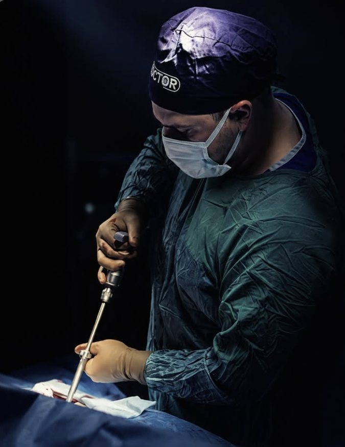

Uzmanlık alanları
Ağrının kaynağına odaklanan tedavi.
Bacağa yayılan ağrı
Siyatik ağrısı ve bacakta uyuşmada muayene, MR değerlendirmesi ve gerektiğinde mikrocerrahi.
Kola yayılan ağrı ve uyuşma
Boyun kaynaklı kol ağrısı, elde uyuşma ve güç kaybında kapsamlı değerlendirme.
Yürürken artan bacak ağrısı
Omurga kanalı daralmasında sinirleri rahatlatan dekompresyon cerrahisi.
Kayma, kırık ve instabilite
Hastaya özel ölçülerde vida ve rod sistemleriyle omurganın sabitlenmesi.
Beyin tümörleri ve kanamalar
Tanıdan ameliyat sonrası takibe kadar planlı yürütülen tedavi.
Sinir sıkışmaları
Karpal tünel ve benzeri sinir sıkışmalarında cerrahi çözüm.

Hakkımda
Sağlığınız için güvene dayalı cerrahi.
Merhaba, ben Op. Dr. Muhammet Serpi. Hekimliğe başladığım ilk günden bu yana temel ilkem, hastalarımın sağlığını güncel bilimsel standartlarla, şeffaflık ve güven içinde korumak ve iyileştirmek oldu.
Tıbbın yalnızca bir tedavi süreci değil, hastayla kurulan güçlü bir iletişim ve empati bağı olduğuna inanıyorum. Gelişen teknolojiyi, güncel bilimsel protokolleri ve cerrahi hassasiyeti her hastamın ihtiyacına özel bir tedavi planında birleştiriyorum.
Op. Dr. Muhammet SerpiBeyin ve Sinir Cerrahisi Uzmanı
- Tıp eğitimiTıp fakültesi bilgisi eklenecek
- Uzmanlık eğitimiİhtisas yapılan kurum eklenecek
- DeneyimÇalışılan hastaneler eklenecek
- Bilimsel çalışmalarYayın, kongre ve sertifikalar eklenecek
Ameliyathaneden
Disiplin, odak ve hassasiyet.
Cerrahide her milimetre planlanır.
Ameliyathanede disiplin, mikroskop altında hassasiyet ve her hasta için önceden ölçülmüş bir plan.
Online ön görüşme
Ağrınızı 3D haritada gösterin.
Ağrıyan bölgeye dokunun, hissettiğinizi seçin ve notunuzu ekleyin. Ön değerlendirmeniz doğrudan Op. Dr. Muhammet Serpi'ye ulaşır; ekibimiz randevu için sizi arar.
- 1İşaretle
- 2Tanımla
- 3Gönder
Tedavi süreci
İlk mesajdan iyileşmeye kadar.
- 1
Ön görüşme
Şikayetinizi online haritada paylaşırsınız, ekibimiz sizi arar.
- 2
Muayene ve görüntüleme
Muayene ve MR ya da BT ile şikayetin kaynağı netleşir.
- 3
Tedavi planı
Ameliyatsız seçenekler dahil, size uygun yol birlikte belirlenir.
- 4
Cerrahi
Gerekirse ölçüleri önceden planlanmış hassas cerrahi uygulanır.
- 5
Takip
İyileşme süreci kontrol muayeneleriyle izlenir.
Sık sorulan sorular
Merak ettikleriniz.
Bel fıtığında her zaman ameliyat gerekir mi?
Hayır. Bel fıtığı olan hastaların çoğu ilaç, fizik tedavi ve egzersizle düzelir. Ameliyat; ilerleyen güç kaybı, idrar ya da dışkı kontrolünde bozulma veya yeterli süre uygulanan tedaviye rağmen geçmeyen ağrı gibi durumlarda gündeme gelir.
Vidalı (stabilizasyon) ameliyat ne zaman gerekir?
Omurgada kayma, kırık, ileri derecede eğrilik veya omurların birbirine göre dengesiz hareket ettiği durumlarda omurganın vida ve rodlarla sabitlenmesi gerekebilir. Karar, muayene ve görüntüleme bulgularıyla birlikte verilir.
Ameliyattan sonra ne zaman ayağa kalkabilirim?
Bu, yapılan ameliyatın türüne göre değişir. Pek çok bel fıtığı ameliyatında hastalar aynı gün ya da ertesi gün yürütülür. Size özel iyileşme süreci muayenede ayrıntılı olarak anlatılır.
Muayeneye gelirken neler getirmeliyim?
Daha önce çekilmiş MR, BT veya röntgen görüntülerinizi (CD ya da dijital olarak) ve raporlarını, kullandığınız ilaçların listesini getirmeniz değerlendirmeyi hızlandırır.
Hangi durumlarda acilen başvurmalıyım?
Kol ya da bacakta ani güç kaybı, idrar veya dışkı kontrolünde bozulma, kasık bölgesinde uyuşma, konuşma bozukluğu ya da hayatınızın en şiddetli baş ağrısı gibi durumlarda vakit kaybetmeden 112'yi arayın veya en yakın acil servise başvurun.